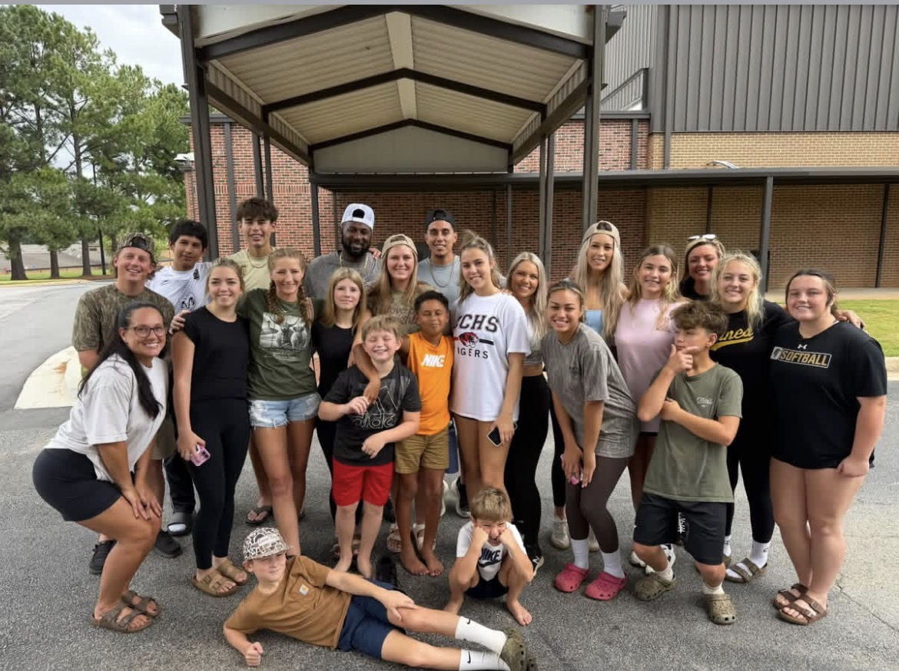

Community in action
Labor Day Wrestling Fundraiser
A day of wrestling, fellowship, and people showing up for the Roark and Stephens families.

What the day meant
Community turned into help.
Slate Wrestling Academy and The Colosseum Training Center shared the mat with wrestlers, coaches, parents, and supporters. Together, the community raised approximately $3,400 for the Roark and Stephens families.
